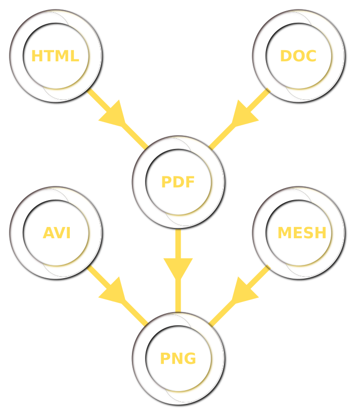

What is OmniC?
OmniC can do a lot of things. Most likely you will want it for making
visualizations and thumbnails without (any other) backend code. It is inspired
in part by White Noise -- notably, reducing complexity by serving media with
Python.
Conversion Graph
- You give it a file and desired outcome, and it
finds the shortest path
- OmniC comes "batteries included", and comes with converters for 3D files,
documents, images, git repos, JS files, and more
- If that's not enough, it only takes a few lines
to add your own converter
- OmniC doesn't reinvent any wheels, instead it
aims to be a framework for stitching together
existing tried-and-true CLI converters (such as ImageMagick,
unoconv, or ffmpeg) and expose them all as a
microservice

Microservice media server
- OmniC is a web server that listens to requests
like
/media/thumb.png:200x200/?url=mysite.com/myimage.jpg,
and then downloads the myimage.jpg file,
generates a 200x200 thumbnail of it, and responds
with that thumbnail.
- It can also do filetype conversions like
/media/PDF/?url=mysite.com/mydoc.doc for a PDF
representation of a ``.doc`` file.